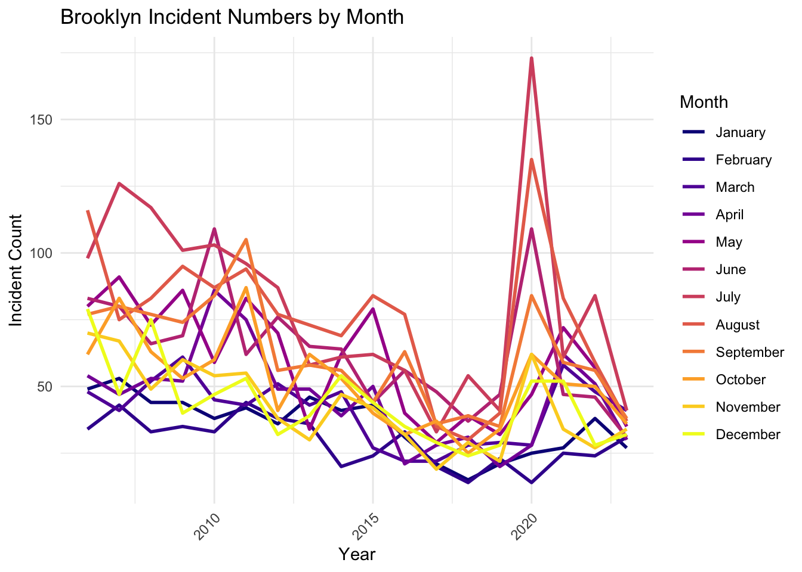
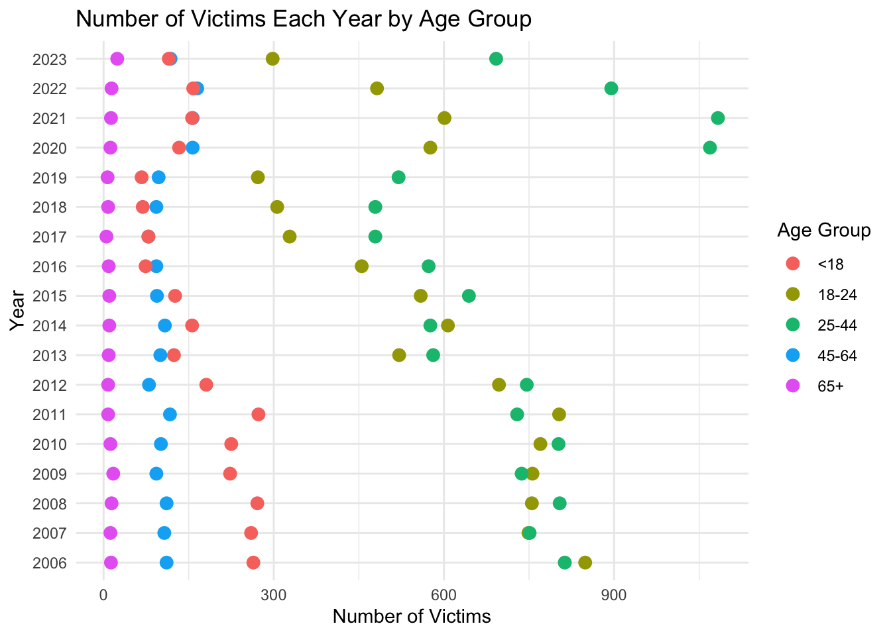

Code
library(tidyr)
library(dplyr)
library(ggplot2)
library(lubridate)
library(vcd)
df = read.csv("data/raw/NYPD_Shooting_Incident_Data.csv")
df$OCCUR_DATE <- as.Date(df$OCCUR_DATE, format = "%m/%d/%Y")library(tidyr)
library(dplyr)
library(ggplot2)
library(lubridate)
library(vcd)
df = read.csv("data/raw/NYPD_Shooting_Incident_Data.csv")
df$OCCUR_DATE <- as.Date(df$OCCUR_DATE, format = "%m/%d/%Y")Firstly, we can see that New York City is divided into five different boroughs:Brooklyn, Bronx, Manhattan, Queens, and Staten Island. To investigate the relationship between safety levels across these areas, we began by using a line plot to visualize and compare the number of shooting incidents in each borough.
crime_data <- df |>
mutate(YearMonth = format(as.Date(OCCUR_DATE), "%Y-%m")) |>
group_by(YearMonth, BORO) |>
summarise(IncidentCount = n(), .groups = "drop") |>
ungroup()crime_data <- df |>
mutate(YearMonth = format(as.Date(OCCUR_DATE, "%m/%d/%Y"), "%Y-%m"))
all_combinations <- crime_data |>
distinct(YearMonth, BORO) |>
complete(YearMonth, BORO, fill = list(IncidentCount = 0))
crime_data_complete <- crime_data |>
group_by(YearMonth, BORO) |>
summarise(IncidentCount = n(), .groups = "drop") |>
right_join(all_combinations, by = c("YearMonth", "BORO")) |>
replace_na(list(IncidentCount = 0)) |>
mutate(YearMonth = as.Date(paste0(YearMonth, "-01"), format = "%Y-%m-%d")) |>
arrange(YearMonth)# Reorder BORO based on the observed rank
crime_data_complete$BORO <- factor(
crime_data_complete$BORO,
levels = c("BROOKLYN", "BRONX", "QUEENS", "MANHATTAN", "STATEN ISLAND")
)
ggplot(crime_data_complete, aes(x = YearMonth, y = IncidentCount, color = BORO, group = BORO)) +
geom_line(linewidth = 1) +
labs(title = "Number of Incidents Over Time by Borough",
x = "Year-Month", y = "Number of Incidents", color = "Borough") +
theme_minimal() +
theme(axis.text.x = element_text(angle = 45, hjust = 1))
From the plot above, we found that Brooklyn almost always has the highest number of incidents in each month and Bronx almost has the second-highest number of incidents in each month. These two boroughs also have the most unstable number of incidents in each month. Queens and Manhattan contain similar number of incidents in each month. The number of incidents in Staten Island is smallest among all boroughs, maybe because of its petite area.
It is also noticeable that the number of incidents in each borough decreases to one level in 2013-2016 (especially for Brooklyn and Bronx) and decreases to another level in 2017-2019, but there exists a sharp increase in 2020, which is probably due to the pandemic and the police brutality protests in the wake of George Floyd’s murder. The number of incidents in Brooklyn and Bronx, after 2020, returns back to a level similar to the level in 2013-2016, while it didn’t decrease until 2023 in Queens and Manhattan.
From the plot above, we find that there might exist a cyclic pattern in boroughs other than Staten Island, where each year is a cycle. To give a closer look at it, we facet this plot by year.
crime_data_complete <- crime_data_complete |>
mutate(Year = format(as.Date(paste0(YearMonth, "-01"), "%Y-%m-%d"), "%Y")) # Extract year
ggplot(crime_data_complete, aes(x = YearMonth, y = IncidentCount, color = BORO, group = BORO)) +
geom_line(linewidth = 1) +
labs(
title = "Number of Incidents Over Each Year by Borough",
x = "Year-Month", y = "Number of Incidents", color = "Borough"
) +
theme_minimal() +
theme(axis.text.x = element_text(angle = 45, hjust = 1)) +
facet_wrap(~ Year, scales = "free_x") The plot above shows the number of shooting incidents over each year in each borough. From the plot, we can see that the cyclic pattern is not very strong. However, it shows that the number of shooting incidents in summer is larger than the number of shooting in other months, especially for Brooklyn and Bronx.
brooklyn_data <- crime_data_complete |>
filter(BORO == "BROOKLYN") |>
mutate(
Month = factor(format(YearMonth, "%B"),
levels = month.name)
)
ggplot(brooklyn_data, aes(
x = as.numeric(format(YearMonth, "%Y")),
y = IncidentCount,
color = Month,
group = Month
)) +
geom_line(size = 1) +
labs(
title = "Brooklyn Incident Numbers by Month",
x = "Year",
y = "Incident Count",
color = "Month"
) +
theme_minimal() +
theme(axis.text.x = element_text(angle = 45, hjust = 1)) +
scale_color_viridis_d(option = "plasma", begin = 0, end = 1)Warning: Using `size` aesthetic for lines was deprecated in ggplot2 3.4.0.
ℹ Please use `linewidth` instead.
This line chart illustrates the monthly distribution of shooting incidents over time. A notable observation is the sharp spike in incidents during July of 2020, significantly exceeding counts in any other month or year. This anomaly may reflect specific societal or environmental factors, such as social unrest or the COVID-19 pandemic’s impact during that period. Generally, the chart reveals a seasonal pattern where summer months (June to August) tend to have higher incident counts compared to colder months, such as January and February. Over the years, there is an overall declining trend in incident counts across most months, indicating potential improvements in public safety or effective interventions. However, periodic fluctuations highlight the persistent need for targeted measures during high-risk months, especially in the summer.
After studying the cyclic pattern of incidents by month, we decided to conduct a more detailed analysis by examining the high-occurrence time periods of shooting incidents within a single day. The insights gained from this data can help in better planning and managing the city.
df$OCCUR_HOUR <- as.numeric(sub(":.*", "", df$OCCUR_TIME))
time_hist_data <- df |>
mutate(TIME_BIN = cut(OCCUR_HOUR, breaks = seq(0, 24, by = 2), right = FALSE, include.lowest = TRUE)) |>
group_by(TIME_BIN) |>
summarise(Frequency = n()) |>
mutate(Percentage = Frequency / sum(Frequency) * 100)ggplot(time_hist_data, aes(x = TIME_BIN, y = Percentage)) +
geom_bar(stat = "identity", fill = "steelblue", color = "black", alpha = 1) +
labs(title = "Histogram of Occur Time",
x = "Time Interval (Hours)",
y = "Percentage (%)") +
scale_y_continuous(labels = scales::percent_format(scale = 1)) +
theme_grey()df$TIME_BIN <- cut(df$OCCUR_HOUR, breaks = seq(0, 24, by = 2), right = FALSE, include.lowest = TRUE)
ggplot(df, aes(x = TIME_BIN, fill = BORO)) +
geom_bar(alpha = 1, color = "black") +
labs(title = "Histogram of Occur Time by Region",
x = "Time Interval (Hours)",
y = "Frequency") +
facet_wrap(~ BORO, ncol = 3) +
theme_grey() +
theme(axis.text.x = element_text(size=8,angle=45, hjust = 1)) 
From the histogram above, we can observe that over 50% of shooting incidents occur between 8 PM and 4 AM, with the peak happening between 10 PM and 2 AM. This pattern is consistent across all regions, even in Staten Island, which has the lowest population. This aligns with the operational dynamics of most cities, especially in a place like New York, which does not enforce a curfew. Many shops and restaurants remain open even during the early hours of the morning, resulting in a nighttime traffic flow that is not significantly lower than during the day. However, reduced police presence at night, particularly around subway stations, leads to a higher number of shooting incidents that go unchecked. Conversely, we can see that 6 AM to 10 AM is the time period with the fewest shooting incidents. On the one hand, most people are at home resting during these hours; on the other hand, the city begins its new day of operations, and workers come out to maintain order. Therefore, it is not surprising that shooting incidents drop significantly during this time.
After a basic analysis of the occurrence time of shooting incidents, we decided to use a heatmap to observe the relationship between the number of incidents, locations, and time.
crime_data_time_boro <- crime_data |>
mutate(
OCCUR_TIME = hms::as_hms(OCCUR_TIME),
TimePeriod = floor(hour(OCCUR_TIME) / 2) * 2
) |>
group_by(BORO, TimePeriod) |>
summarise(IncidentCount = n(), .groups = "drop") |>
mutate(BORO = factor(BORO, levels = c("BROOKLYN", "BRONX", "QUEENS", "MANHATTAN", "STATEN ISLAND")))
ggplot(crime_data_time_boro, aes(x = TimePeriod, y = BORO, fill = IncidentCount)) +
geom_tile() +
scale_x_continuous(breaks = seq(0, 22, by = 2), labels = paste0(seq(0, 22, by = 2), "-", seq(2, 24, by = 2))) +
scale_fill_gradient(low = "white", high = "red") +
labs(title = "Heatmap of Incidents by Time and Borough",
x = "Time Period (2-hour intervals)", y = "Borough", fill = "Incident Count") +
theme_minimal() +
theme(axis.text.x = element_text(angle = 45, hjust = 1))
This heatmap reveals an even more significant patterns in the distribution of shooting incidents across different boroughs and time periods than the histogram showned above. The data indicates that shooting incidents are most frequent during late-night hours, specifically between midnight and 2 AM (0-2) and 10 PM to midnight (22-24), with these periods showing the darkest colors, representing the highest incident counts. Brooklyn and the Bronx stand out as the boroughs with the highest frequency of incidents, particularly during these high-risk time frames. In contrast, Queens and Manhattan exhibit comparatively lower incident counts, while Staten Island emerges as the safest borough with minimal occurrences throughout the day. Additionally, there is a noticeable dip in shooting incidents during daytime hours, from 6 AM to 4 PM (6-16), likely reflecting increased societal activity and stronger oversight during these times. This analysis underscores the interaction between time and location, highlighting specific areas and periods that may require targeted safety interventions.
When studying cyclic patterns, the day-of-week effect is also crucial, as it highlights which days of the week warrant attention and caution. Therefore, we decided to use a line plot to create a weekly plot for a specific year, with the aid of a smooth line to more intuitively observe the probability and trends of incidents occurring on each day.
Based on the Line Plot: Number of Incidents per Year/Month, we observe that the number of shooting incidents during this year is particularly high, likely due to the impact of the pandemic. Therefore, we selected this year as a comprehensive sample to analyze the day-of-week effect.
df$OCCUR_DATE <- as.Date(df$OCCUR_DATE, format = "%m/%d/%Y")
df <- df |>
mutate(
Day_of_Week = wday(OCCUR_DATE, label = TRUE, week_start = 1),
Month = month(OCCUR_DATE, label = TRUE),
Year = year(OCCUR_DATE)
)
df_2020 <- df |> filter(Year == 2020)
daily_counts <- df_2020 |>
group_by(OCCUR_DATE, Day_of_Week) |>
summarise(Incident_Count = n(), .groups = "drop")
ggplot(daily_counts, aes(x = OCCUR_DATE, y = Incident_Count, group = Day_of_Week)) +
geom_line(color = "black", size = 0.7) +
facet_wrap(~ Day_of_Week, ncol = 3) +
labs(
title = "Daily Shooting Incidents in 2020 by Day of Week",
x = "Date",
y = "Number of Incidents"
) +
theme_grey()+
theme(axis.text.x = element_text(size=5,angle=45, hjust = 1))
ggplot(daily_counts, aes(x = OCCUR_DATE, y = Incident_Count, group = Day_of_Week)) +
geom_line(color = "black", size = 0.7) +
geom_smooth(se = FALSE, color = "blue", size = 1) +
facet_wrap(~ Day_of_Week, ncol = 7) +
labs(
title = "Daily Shooting Incidents in 2020 by Day of Week (With Smoother)",
x = "Date",
y = "Number of Incidents"
) +
theme_grey()+
theme(axis.text.x = element_text(size=5, hjust = 1))`geom_smooth()` using method = 'loess' and formula = 'y ~ x'
With the help of the smoother, we can observe that shooting incidents are generally higher on weekends compared to weekdays, especially on Sundays. This aligns with common sense, as most people work during the weekdays, while weekends are typically reserved for relaxation or social gatherings. This may cause people staying out later at night, which, as seen in our Histogram: OCCUR_TIME (0-2, 2-4, …, 22-24), is when incidents are more likely to occur, matching this pattern.
Next, we shift our focus to the incidents themselves. By analyzing the number of crimes committed across different age groups, we can better understand which groups are more prone to committing crimes, allowing us to implement more effective management and guidance, particularly for younger individuals. We will use a Cleveland dot plot for this analysis.
df <- df |>
mutate(VIC_AGE_GROUP = case_when(
VIC_AGE_GROUP %in% c("<18", "18-24", "25-44", "45-64", "65+", "UNKNOWN") ~ VIC_AGE_GROUP,
TRUE ~ "UNKNOWN"
))df_cleaned <- df |>
mutate(VIC_AGE_GROUP = case_when(
VIC_AGE_GROUP %in% c("<18", "18-24", "25-44", "45-64", "65+") ~ VIC_AGE_GROUP,
TRUE ~ NA_character_
)) |>
filter(!is.na(VIC_AGE_GROUP))
processed_data <- df_cleaned |>
mutate(OCCUR_YEAR = year(as.Date(OCCUR_DATE, format = "%m/%d/%Y"))) |>
group_by(OCCUR_YEAR, VIC_AGE_GROUP) |>
summarise(Victim_Count = n(), .groups = "drop")
ggplot(processed_data, aes(x = Victim_Count, y = factor(OCCUR_YEAR), color = VIC_AGE_GROUP)) +
geom_point(size = 3) +
labs(
title = "Number of Victims Each Year by Age Group",
x = "Number of Victims",
y = "Year",
color = "Age Group"
) +
theme_minimal() +
theme(strip.text = element_text(size = 12))
From this Cleveland bar chart, it is evident that shooting victims of different age groups exhibit distinct trends over the years. Firstly, the 25-44 age group accounts for the highest number of victims, likely because this group is more actively involved in social and professional activities, increasing their exposure to potential risks. Secondly, the 18-24 age group shows a significant rise in victim numbers in certain years (e.g., 2018 to 2020), suggesting a stronger correlation with increasing high-risk activities such as gang conflicts or criminal behavior. The 65+ age group has the fewest victims, possibly due to reduced social activity and lower exposure to danger. Although the number of victims under 18 is relatively small, it remains a concern, highlighting the need for measures to prevent their involvement in violent incidents. Overall, in certain years such as 2020, the number of victims across various age groups increased significantly, potentially linked to external factors like social unrest, economic stress, and covid virus. This analysis underscores the importance of enhancing public safety measures and implementing targeted interventions, particularly for age groups with higher victim counts.
It’s not just about age; we need more information about the victims to better protect specific age groups and certain communities from harm. Therefore, we use a Cleveland dot plot again to study the impact of gender and race on victims.
crime_data <- crime_data |>
mutate(YearMonth = as.Date(paste0(YearMonth, "-01"), format = "%Y-%m-%d")) |>
mutate(YEAR = year(YearMonth))
data_summary <- crime_data |>
group_by(YEAR, VIC_SEX) |>
summarise(Count = n(), .groups = 'drop')
ggplot(data_summary, aes(x = Count, y = as.factor(YEAR), color = VIC_SEX)) +
geom_point(size = 3) +
labs(title = "Cleveland Dot Plot of Victim Sex by Year",
x = "Incident Count", y = "Year", color = "Victim Sex") +
theme_minimal() +
theme(axis.text.y = element_text(angle = 45, hjust = 1)) +
scale_color_manual(values = c("red", "blue", "grey"),labels = c("Female", "Male", "Unknown"))data_summary <- crime_data |>
group_by(YEAR, VIC_SEX, VIC_RACE) |>
summarise(Count = n(), .groups = 'drop')
ggplot(data_summary, aes(x = Count, y = as.factor(YEAR), color = VIC_SEX)) +
geom_point(size = 3) +
labs(title = "Cleveland Dot Plot of Victim Sex by Year (Faceted by Race)",
x = "Incident Count", y = "Year", color = "Victim Sex") +
theme_minimal() +
theme(axis.text.y = element_text(angle = 45, hjust = 1)) +
scale_color_manual(
values = c("red", "blue", "gray"),
labels = c("Female", "Male", "Unknown")
) +
facet_wrap(~ VIC_RACE, scales = "free")The plot above shows that for all races, the number of male victims is almost always larger than the number of female victims in each year. The number of female victims in each year is relatively stable compared to the number of male victims for all races. We also noticed that Black, White Hispanic, and Black Hispanic are races that have the top 3 number of victims in each year.This data urges us to better protect individuals of these races.
Last but not least,We still need to study the relationships between victims and perpetrators, such as which age groups are more likely to experience conflicts that escalate into shooting incidents. With this research, we can implement more control measures in venues frequently visited by specific age groups (e.g., bars and nightclubs commonly frequented by young adults aged 25-44) to suppress the occurrence of shooting incidents.
df_clean_age <- df |>
filter(VIC_AGE_GROUP != "1022", PERP_AGE_GROUP != "1020", PERP_AGE_GROUP != "(null)", PERP_AGE_GROUP != "", PERP_AGE_GROUP != "940", PERP_AGE_GROUP != "224", PERP_AGE_GROUP != "1028", VIC_AGE_GROUP!="UNKNOWN",PERP_AGE_GROUP!="UNKNOWN")
age_table <- table(df_clean_age$PERP_AGE_GROUP, df_clean_age$VIC_AGE_GROUP)
age_table_long <- as.data.frame(as.table(age_table))
colnames(age_table_long) <- c("PERP_AGE_GROUP", "VIC_AGE_GROUP", "Count")
ggplot(age_table_long, aes(x = PERP_AGE_GROUP, y = VIC_AGE_GROUP, fill = Count)) +
geom_tile(color = "white") +
scale_fill_distiller(palette = "Blues", direction = 1) +
labs(
title = "Heatmap of Perpetrator and Victim Age Groups",
x = "Perpetrator Age Group",
y = "Victim Age Group",
fill = "Count"
) +
theme_minimal() +
theme(
axis.text.x = element_text(angle = 45, hjust = 1) # Rotate x-axis labels for readability
)The heatmap above shows the heatmap of age groups of perpetrators and victims. From the plot, we can see that the victims in 18-24 and 25-44 are much more than victims in other age groups. Other than perpetrators over 65 years old, almost perpetrators in every age group are more likely to shoot victims who are between 18-44 years old. In addition, we find that the perpetrators in 18-24 years old are more likely to shoot vitims who are 18-24 years old instead of victims who are 25-44 years old, while the perpetrators in 25-44 years old are more likely to shoot victims who are 25-44 years old instead of victims who are 18-24 years old. This is reasonable because individuals in similar age groups are more likely to interact within the same social environments.
With the help of the static plots above, we successfully explored the relationship between shooting incidents and boroughs, as well as examined whether the probability of incidents has a cyclic pattern related to months, weeks, or specific time periods within a day. Furthermore, we delved deeper into the incidents themselves, investigating the relationships between victims’ age, gender, race, and the age of offenders. However, to further study and prevent shooting incidents, we need to conduct a more detailed analysis of the specific locations where shootings occur and examine how they change over time (e.g., multiple shooting incidents occurring at the same location and time might indicate a massive gunfight, which should be prioritized for prevention). To achieve this, we utilized D3 to plot the latitude and longitude of shooting incidents in Brooklyn during July 2020, as this month witnessed an unprecedented number of incidents.
filtered_data <- crime_data |>
filter(
BORO == "BROOKLYN",
format(OCCUR_DATE, "%Y-%m") == "2020-07"
) |>
select(OCCUR_DATE, BORO, Latitude, Longitude)output_text <- filtered_data |>
mutate(
text = paste0("{ latitude: ", Latitude,
", longitude: ", Longitude,
", date: '", OCCUR_DATE, "' }")
) |>
pull(text) |>
paste(collapse = ",\n ")
output_text <- paste0("[\n ", output_text, "\n]")
cat(output_text)date_counts <- filtered_data |>
group_by(OCCUR_DATE) |>
summarize(Count = n())min_values <- apply(filtered_data, 2, min)
max_values <- apply(filtered_data, 2, max)
print(min_values)
print(max_values)